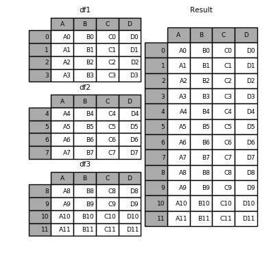
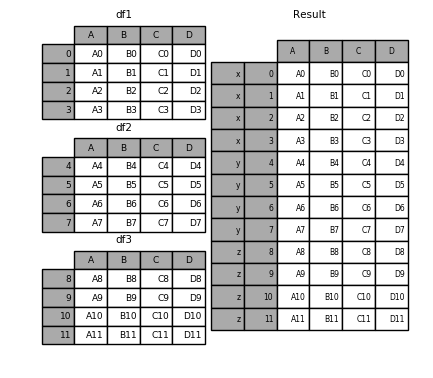
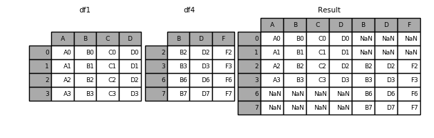
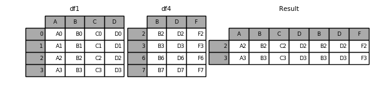

<!DOCTYPE HTML>
<html lang="en" >
    
    <head>
        
        <meta charset="UTF-8">
        <meta http-equiv="X-UA-Compatible" content="IE=edge" />
        <title>数据组装 | Linkedln：2016年中国互联网最热职位人才库报告</title>
        <meta content="text/html; charset=utf-8" http-equiv="Content-Type">
        <meta name="description" content="">
        <meta name="generator" content="GitBook 2.6.7">
        
        
        <meta name="HandheldFriendly" content="true"/>
        <meta name="viewport" content="width=device-width, initial-scale=1, user-scalable=no">
        <meta name="apple-mobile-web-app-capable" content="yes">
        <meta name="apple-mobile-web-app-status-bar-style" content="black">
        <link rel="apple-touch-icon-precomposed" sizes="152x152" href="../gitbook/images/apple-touch-icon-precomposed-152.png">
        <link rel="shortcut icon" href="../gitbook/images/favicon.ico" type="image/x-icon">
        
    <link rel="stylesheet" href="../gitbook/style.css">
    
        
        <link rel="stylesheet" href="../gitbook/plugins/gitbook-plugin-highlight/website.css">
        
    
        
        <link rel="stylesheet" href="../gitbook/plugins/gitbook-plugin-search/search.css">
        
    
        
        <link rel="stylesheet" href="../gitbook/plugins/gitbook-plugin-fontsettings/website.css">
        
    
    

        
    
    
    <link rel="next" href="../part03/3.3.2_轴向旋转.html" />
    
    
    <link rel="prev" href="../part03/3.3_数据准备.html" />
    

        
    </head>
    <body>
        
        
    <div class="book"
        data-level="3.3.1"
        data-chapter-title="数据组装"
        data-filepath="part03/3.3.1_数据组装.md"
        data-basepath=".."
        data-revision="Thu Dec 14 2017 23:24:20 GMT+0800 (CST)"
        data-innerlanguage="">
    

<div class="book-summary">
    <nav role="navigation">
        <ul class="summary">
            
            
            
            

            

            
    
        <li class="chapter " data-level="0" data-path="index.html">
            
                
                    <a href="../index.html">
                
                        <i class="fa fa-check"></i>
                        
                        数据分析
                    </a>
            
            
        </li>
    
        <li class="chapter " data-level="1" data-path="part01/1_数据分析概述.html">
            
                
                    <a href="../part01/1_数据分析概述.html">
                
                        <i class="fa fa-check"></i>
                        
                            <b>1.</b>
                        
                        数据分析概述
                    </a>
            
            
            <ul class="articles">
                
    
        <li class="chapter " data-level="1.1" data-path="part01/1.1_Python数据分析.html">
            
                
                    <a href="../part01/1.1_Python数据分析.html">
                
                        <i class="fa fa-check"></i>
                        
                            <b>1.1.</b>
                        
                        Python数据分析
                    </a>
            
            
        </li>
    
        <li class="chapter " data-level="1.2" data-path="part01/1.2_jupyper_notebook.html">
            
                
                    <a href="../part01/1.2_jupyper_notebook.html">
                
                        <i class="fa fa-check"></i>
                        
                            <b>1.2.</b>
                        
                        jupyter notebook
                    </a>
            
            
        </li>
    

            </ul>
            
        </li>
    
        <li class="chapter " data-level="2" data-path="part02/2_Numpy.html">
            
                
                    <a href="../part02/2_Numpy.html">
                
                        <i class="fa fa-check"></i>
                        
                            <b>2.</b>
                        
                        Numpy
                    </a>
            
            
            <ul class="articles">
                
    
        <li class="chapter " data-level="2.1" data-path="part02/2.1_创建数组.html">
            
                
                    <a href="../part02/2.1_创建数组.html">
                
                        <i class="fa fa-check"></i>
                        
                            <b>2.1.</b>
                        
                        创建数组
                    </a>
            
            
        </li>
    
        <li class="chapter " data-level="2.2" data-path="part02/2.2_数据类型.html">
            
                
                    <a href="../part02/2.2_数据类型.html">
                
                        <i class="fa fa-check"></i>
                        
                            <b>2.2.</b>
                        
                        数据类型
                    </a>
            
            
        </li>
    
        <li class="chapter " data-level="2.3" data-path="part02/2.3_数组运算.html">
            
                
                    <a href="../part02/2.3_数组运算.html">
                
                        <i class="fa fa-check"></i>
                        
                            <b>2.3.</b>
                        
                        数组运算
                    </a>
            
            
        </li>
    
        <li class="chapter " data-level="2.4" data-path="part02/2.4_数组索引和切片.html">
            
                
                    <a href="../part02/2.4_数组索引和切片.html">
                
                        <i class="fa fa-check"></i>
                        
                            <b>2.4.</b>
                        
                        数组索引和切片
                    </a>
            
            
        </li>
    
        <li class="chapter " data-level="2.5" data-path="part02/2.5_数组函数.html">
            
                
                    <a href="../part02/2.5_数组函数.html">
                
                        <i class="fa fa-check"></i>
                        
                            <b>2.5.</b>
                        
                        数组函数
                    </a>
            
            
            <ul class="articles">
                
    
        <li class="chapter " data-level="2.5.1" data-path="part02/2.5.1_通用元素级数组函数.html">
            
                
                    <a href="../part02/2.5.1_通用元素级数组函数.html">
                
                        <i class="fa fa-check"></i>
                        
                            <b>2.5.1.</b>
                        
                        通用元素级数组函数
                    </a>
            
            
        </li>
    
        <li class="chapter " data-level="2.5.2" data-path="part02/2.5.2_数组统计函数.html">
            
                
                    <a href="../part02/2.5.2_数组统计函数.html">
                
                        <i class="fa fa-check"></i>
                        
                            <b>2.5.2.</b>
                        
                        数组统计函数
                    </a>
            
            
        </li>
    
        <li class="chapter " data-level="2.5.3" data-path="part02/2.5.3_all和any函数.html">
            
                
                    <a href="../part02/2.5.3_all和any函数.html">
                
                        <i class="fa fa-check"></i>
                        
                            <b>2.5.3.</b>
                        
                        all和any函数
                    </a>
            
            
        </li>
    
        <li class="chapter " data-level="2.5.4" data-path="part02/2.5.4_添加和删除函数.html">
            
                
                    <a href="../part02/2.5.4_添加和删除函数.html">
                
                        <i class="fa fa-check"></i>
                        
                            <b>2.5.4.</b>
                        
                        添加和删除函数
                    </a>
            
            
        </li>
    
        <li class="chapter " data-level="2.5.5" data-path="part02/2.5.5_唯一化和集合函数.html">
            
                
                    <a href="../part02/2.5.5_唯一化和集合函数.html">
                
                        <i class="fa fa-check"></i>
                        
                            <b>2.5.5.</b>
                        
                        唯一化和集合函数
                    </a>
            
            
        </li>
    
        <li class="chapter " data-level="2.5.6" data-path="part02/2.5.6_随机数生成函数.html">
            
                
                    <a href="../part02/2.5.6_随机数生成函数.html">
                
                        <i class="fa fa-check"></i>
                        
                            <b>2.5.6.</b>
                        
                        随机数生成函数
                    </a>
            
            
        </li>
    
        <li class="chapter " data-level="2.5.7" data-path="part02/2.5.7_数组排序函数.html">
            
                
                    <a href="../part02/2.5.7_数组排序函数.html">
                
                        <i class="fa fa-check"></i>
                        
                            <b>2.5.7.</b>
                        
                        数组排序函数
                    </a>
            
            
        </li>
    

            </ul>
            
        </li>
    
        <li class="chapter " data-level="2.6" data-path="part02/2.6_数组文件输入输出.html">
            
                
                    <a href="../part02/2.6_数组文件输入输出.html">
                
                        <i class="fa fa-check"></i>
                        
                            <b>2.6.</b>
                        
                        数组文件输入输出
                    </a>
            
            
            <ul class="articles">
                
    
        <li class="chapter " data-level="2.6.1" data-path="part02/2.6.1_数组输入和输出.html">
            
                
                    <a href="../part02/2.6.1_数组输入和输出.html">
                
                        <i class="fa fa-check"></i>
                        
                            <b>2.6.1.</b>
                        
                        数组输入和输出
                    </a>
            
            
        </li>
    
        <li class="chapter " data-level="2.6.2" data-path="part02/2.6.2_读写文本文件.html">
            
                
                    <a href="../part02/2.6.2_读写文本文件.html">
                
                        <i class="fa fa-check"></i>
                        
                            <b>2.6.2.</b>
                        
                        读写文本文件
                    </a>
            
            
        </li>
    

            </ul>
            
        </li>
    
        <li class="chapter " data-level="2.7" data-path="part02/2.7_案例_亚洲国家人口数据计算.html">
            
                
                    <a href="../part02/2.7_案例_亚洲国家人口数据计算.html">
                
                        <i class="fa fa-check"></i>
                        
                            <b>2.7.</b>
                        
                        案例_亚洲国家人口数据
                    </a>
            
            
        </li>
    

            </ul>
            
        </li>
    
        <li class="chapter " data-level="3" data-path="part03/3_Pandas.html">
            
                
                    <a href="../part03/3_Pandas.html">
                
                        <i class="fa fa-check"></i>
                        
                            <b>3.</b>
                        
                        Pandas
                    </a>
            
            
            <ul class="articles">
                
    
        <li class="chapter " data-level="3.1" data-path="part03/3.1_Series.html">
            
                
                    <a href="../part03/3.1_Series.html">
                
                        <i class="fa fa-check"></i>
                        
                            <b>3.1.</b>
                        
                        Series
                    </a>
            
            
            <ul class="articles">
                
    
        <li class="chapter " data-level="3.1.1" data-path="part03/3.1.1_Series创建.html">
            
                
                    <a href="../part03/3.1.1_Series创建.html">
                
                        <i class="fa fa-check"></i>
                        
                            <b>3.1.1.</b>
                        
                        Series创建
                    </a>
            
            
        </li>
    
        <li class="chapter " data-level="3.1.2" data-path="part03/3.1.2_Series操作.html">
            
                
                    <a href="../part03/3.1.2_Series操作.html">
                
                        <i class="fa fa-check"></i>
                        
                            <b>3.1.2.</b>
                        
                        Series操作
                    </a>
            
            
        </li>
    
        <li class="chapter " data-level="3.1.3" data-path="part03/3.1.3_了解NaN.html">
            
                
                    <a href="../part03/3.1.3_了解NaN.html">
                
                        <i class="fa fa-check"></i>
                        
                            <b>3.1.3.</b>
                        
                        了解NaN
                    </a>
            
            
        </li>
    

            </ul>
            
        </li>
    
        <li class="chapter " data-level="3.2" data-path="part03/3.2_DataFrame.html">
            
                
                    <a href="../part03/3.2_DataFrame.html">
                
                        <i class="fa fa-check"></i>
                        
                            <b>3.2.</b>
                        
                        DataFrame
                    </a>
            
            
            <ul class="articles">
                
    
        <li class="chapter " data-level="3.2.1" data-path="part03/3.2.1_DataFrame创建.html">
            
                
                    <a href="../part03/3.2.1_DataFrame创建.html">
                
                        <i class="fa fa-check"></i>
                        
                            <b>3.2.1.</b>
                        
                        创建对象
                    </a>
            
            
        </li>
    
        <li class="chapter " data-level="3.2.2" data-path="part03/3.2.2_DataFrame操作.html">
            
                
                    <a href="../part03/3.2.2_DataFrame操作.html">
                
                        <i class="fa fa-check"></i>
                        
                            <b>3.2.2.</b>
                        
                        数据操作
                    </a>
            
            
        </li>
    
        <li class="chapter " data-level="3.2.3" data-path="part03/3.2.3_算数运算和数据对齐.html">
            
                
                    <a href="../part03/3.2.3_算数运算和数据对齐.html">
                
                        <i class="fa fa-check"></i>
                        
                            <b>3.2.3.</b>
                        
                        算数运算和数据对齐
                    </a>
            
            
        </li>
    
        <li class="chapter " data-level="3.2.4" data-path="part03/3.2.4_函数应用-apply函数.html">
            
                
                    <a href="../part03/3.2.4_函数应用-apply函数.html">
                
                        <i class="fa fa-check"></i>
                        
                            <b>3.2.4.</b>
                        
                        函数应用和映射了解NaN
                    </a>
            
            
        </li>
    
        <li class="chapter " data-level="3.2.5" data-path="part03/3.2.5_Pandas排序.html">
            
                
                    <a href="../part03/3.2.5_Pandas排序.html">
                
                        <i class="fa fa-check"></i>
                        
                            <b>3.2.5.</b>
                        
                        Pandas排序
                    </a>
            
            
        </li>
    
        <li class="chapter " data-level="3.2.6" data-path="part03/3.2.6_等级索引和分级.html">
            
                
                    <a href="../part03/3.2.6_等级索引和分级.html">
                
                        <i class="fa fa-check"></i>
                        
                            <b>3.2.6.</b>
                        
                        等级索引和分级
                    </a>
            
            
        </li>
    
        <li class="chapter " data-level="3.2.7" data-path="part03/3.2.7_处理缺失数据.html">
            
                
                    <a href="../part03/3.2.7_处理缺失数据.html">
                
                        <i class="fa fa-check"></i>
                        
                            <b>3.2.7.</b>
                        
                        处理缺失数据
                    </a>
            
            
        </li>
    

            </ul>
            
        </li>
    
        <li class="chapter " data-level="3.3" data-path="part03/3.3_数据准备.html">
            
                
                    <a href="../part03/3.3_数据准备.html">
                
                        <i class="fa fa-check"></i>
                        
                            <b>3.3.</b>
                        
                        数据准备
                    </a>
            
            
            <ul class="articles">
                
    
        <li class="chapter active" data-level="3.3.1" data-path="part03/3.3.1_数据组装.html">
            
                
                    <a href="../part03/3.3.1_数据组装.html">
                
                        <i class="fa fa-check"></i>
                        
                            <b>3.3.1.</b>
                        
                        数据组装
                    </a>
            
            
        </li>
    
        <li class="chapter " data-level="3.3.2" data-path="part03/3.3.2_轴向旋转.html">
            
                
                    <a href="../part03/3.3.2_轴向旋转.html">
                
                        <i class="fa fa-check"></i>
                        
                            <b>3.3.2.</b>
                        
                        轴向旋转
                    </a>
            
            
        </li>
    

            </ul>
            
        </li>
    
        <li class="chapter " data-level="3.4" data-path="part03/3.4_数据转换.html">
            
                
                    <a href="../part03/3.4_数据转换.html">
                
                        <i class="fa fa-check"></i>
                        
                            <b>3.4.</b>
                        
                        数据转换
                    </a>
            
            
            <ul class="articles">
                
    
        <li class="chapter " data-level="3.4.1" data-path="part03/3.4.1_删除重复行.html">
            
                
                    <a href="../part03/3.4.1_删除重复行.html">
                
                        <i class="fa fa-check"></i>
                        
                            <b>3.4.1.</b>
                        
                        删除重复行列
                    </a>
            
            
        </li>
    
        <li class="chapter " data-level="3.4.2" data-path="part03/3.4.2_映射.html">
            
                
                    <a href="../part03/3.4.2_映射.html">
                
                        <i class="fa fa-check"></i>
                        
                            <b>3.4.2.</b>
                        
                        映射
                    </a>
            
            
        </li>
    
        <li class="chapter " data-level="3.4.3" data-path="part03/3.4.3_排序-take函数.html">
            
                
                    <a href="../part03/3.4.3_排序-take函数.html">
                
                        <i class="fa fa-check"></i>
                        
                            <b>3.4.3.</b>
                        
                        排序
                    </a>
            
            
        </li>
    

            </ul>
            
        </li>
    
        <li class="chapter " data-level="3.5" data-path="part03/3.5_数据聚合.html">
            
                
                    <a href="../part03/3.5_数据聚合.html">
                
                        <i class="fa fa-check"></i>
                        
                            <b>3.5.</b>
                        
                        数据聚合
                    </a>
            
            
            <ul class="articles">
                
    
        <li class="chapter " data-level="3.5.1" data-path="part03/3.5.1_分组-GroupBy.html">
            
                
                    <a href="../part03/3.5.1_分组-GroupBy.html">
                
                        <i class="fa fa-check"></i>
                        
                            <b>3.5.1.</b>
                        
                        分组(GroupBy)
                    </a>
            
            
        </li>
    
        <li class="chapter " data-level="3.5.2" data-path="part03/3.5.2_聚合-Aggregation.html">
            
                
                    <a href="../part03/3.5.2_聚合-Aggregation.html">
                
                        <i class="fa fa-check"></i>
                        
                            <b>3.5.2.</b>
                        
                        聚合(Aggregation)
                    </a>
            
            
        </li>
    

            </ul>
            
        </li>
    
        <li class="chapter " data-level="3.6" data-path="part03/3.6_数据读写.html">
            
                
                    <a href="../part03/3.6_数据读写.html">
                
                        <i class="fa fa-check"></i>
                        
                            <b>3.6.</b>
                        
                        数据读写
                    </a>
            
            
            <ul class="articles">
                
    
        <li class="chapter " data-level="3.6.1" data-path="part03/3.6.1_读写CSV文本数据.html">
            
                
                    <a href="../part03/3.6.1_读写CSV文本数据.html">
                
                        <i class="fa fa-check"></i>
                        
                            <b>3.6.1.</b>
                        
                        读写CSV文本数据
                    </a>
            
            
        </li>
    
        <li class="chapter " data-level="3.6.2" data-path="part03/3.6.2_读写HTML文本文件数据.html">
            
                
                    <a href="../part03/3.6.2_读写HTML文本文件数据.html">
                
                        <i class="fa fa-check"></i>
                        
                            <b>3.6.2.</b>
                        
                        读写HTML文本文件数据
                    </a>
            
            
        </li>
    
        <li class="chapter " data-level="3.6.3" data-path="part03/3.6.3_读写数据库数据.html">
            
                
                    <a href="../part03/3.6.3_读写数据库数据.html">
                
                        <i class="fa fa-check"></i>
                        
                            <b>3.6.3.</b>
                        
                        读写数据库数据
                    </a>
            
            
        </li>
    

            </ul>
            
        </li>
    

            </ul>
            
        </li>
    
        <li class="chapter " data-level="4" data-path="part04/4_Matplotlib.html">
            
                
                    <a href="../part04/4_Matplotlib.html">
                
                        <i class="fa fa-check"></i>
                        
                            <b>4.</b>
                        
                        Matplotlib
                    </a>
            
            
            <ul class="articles">
                
    
        <li class="chapter " data-level="4.1" data-path="part04/4.1_图表绘制.html">
            
                
                    <a href="../part04/4.1_图表绘制.html">
                
                        <i class="fa fa-check"></i>
                        
                            <b>4.1.</b>
                        
                        图标绘制
                    </a>
            
            
            <ul class="articles">
                
    
        <li class="chapter " data-level="4.1.1" data-path="part04/4.1.1_线性图和案例.html">
            
                
                    <a href="../part04/4.1.1_线性图和案例.html">
                
                        <i class="fa fa-check"></i>
                        
                            <b>4.1.1.</b>
                        
                        线性图和案例
                    </a>
            
            
        </li>
    
        <li class="chapter " data-level="4.1.2" data-path="part04/4.1.2_条状图和案例.html">
            
                
                    <a href="../part04/4.1.2_条状图和案例.html">
                
                        <i class="fa fa-check"></i>
                        
                            <b>4.1.2.</b>
                        
                        条状图和案例
                    </a>
            
            
        </li>
    
        <li class="chapter " data-level="4.1.3" data-path="part04/4.1.3_饼图和案例.html">
            
                
                    <a href="../part04/4.1.3_饼图和案例.html">
                
                        <i class="fa fa-check"></i>
                        
                            <b>4.1.3.</b>
                        
                        饼图和案例
                    </a>
            
            
        </li>
    

            </ul>
            
        </li>
    
        <li class="chapter " data-level="4.2" data-path="part04/4.2_绘制多个图像.html">
            
                
                    <a href="../part04/4.2_绘制多个图像.html">
                
                        <i class="fa fa-check"></i>
                        
                            <b>4.2.</b>
                        
                        绘制多个图像
                    </a>
            
            
        </li>
    

            </ul>
            
        </li>
    


            
            <li class="divider"></li>
            <li>
                <a href="https://www.gitbook.com" target="blank" class="gitbook-link">
                    Published with GitBook
                </a>
            </li>
            
        </ul>
    </nav>
</div>

    <div class="book-body">
        <div class="body-inner">
            <div class="book-header" role="navigation">
    <!-- Actions Left -->
    

    <!-- Title -->
    <h1>
        <i class="fa fa-circle-o-notch fa-spin"></i>
        <a href="../" >Linkedln：2016年中国互联网最热职位人才库报告</a>
    </h1>
</div>

            <div class="page-wrapper" tabindex="-1" role="main">
                <div class="page-inner">
                
                
                    <section class="normal" id="section-">
                    
                        <p><span id="3.2.1.1"></span></p>
<h3 id="331-&#x6570;&#x636E;&#x7EC4;&#x88C5;">3.3.1 &#x6570;&#x636E;&#x7EC4;&#x88C5;</h3>
<hr>
<ul>
<li><a href="#3.3.1.1">&#x5408;&#x5E76;(merge)</a></li>
<li><a href="#3.3.1.2">&#x62FC;&#x63A5;(concatenation)</a></li>
<li><a href="#3.3.1.3">&#x7EC4;&#x5408;(combine)</a></li>
</ul>
<p>&#x5BF9;&#x4E8E;&#x5B58;&#x50A8;&#x5728;pandas&#x5BF9;&#x8C61;&#x4E2D;&#x7684;&#x5404;&#x79CD;&#x6570;&#x636E;&#xFF0C;&#x7EC4;&#x88C5;&#x7684;&#x65B9;&#x6CD5;&#x6709;&#x4EE5;&#x4E0B;&#x51E0;&#x79CD;:</p>
<ul>
<li>&#x5408;&#x5E76;--pandas.merge()&#x51FD;&#x6570;&#x6839;&#x636E;&#x4E00;&#x4E2A;&#x6216;&#x591A;&#x4E2A;&#x952E;&#x8FDE;&#x63A5;&#x591A;&#x884C;.</li>
<li>&#x62FC;&#x63A5;--pandas.concat()&#x51FD;&#x6570;&#x6309;&#x7167;&#x8F74;&#x628A;&#x591A;&#x4E2A;&#x5BF9;&#x8C61;&#x62FC;&#x63A5;&#x8D77;&#x6765;.</li>
<li>&#x7ED3;&#x5408;--pandas.DataFrame.combine_first()&#x51FD;&#x6570;&#x4ECE;&#x53E6;&#x5916;&#x4E00;&#x4E2A;&#x6570;&#x636E;&#x7ED3;&#x6784;&#x83B7;&#x53D6;&#x6570;&#x636E;&#xFF0C;&#x8FDE;&#x63A5;&#x91CD;&#x5408;&#x7684;&#x6570;&#x636E;&#xFF0C;&#x586B;&#x5145;&#x7F3A;&#x5931;&#x503C;.</li>
</ul>
<p><span id="3.3.1.1"></span></p>
<h4 id="3311-&#x5408;&#x5E76;merge">3.3.1.1 &#x5408;&#x5E76;(merge)</h4>
<hr>
<p>&#x5BF9;&#x4E8E;&#x5408;&#x5E76;&#x64CD;&#x4F5C;&#xFF0C;&#x719F;&#x6089;SQL&#x7684;&#x8BFB;&#x8005;&#x53EF;&#x4EE5;&#x5C06;&#x5176;&#x7406;&#x89E3;&#x4E3A;JOIN&#x64CD;&#x4F5C;&#xFF0C;&#x5B83;&#x4F7F;&#x7528;&#x4E00;&#x4E2A;&#x6216;&#x591A;&#x4E2A;&#x952E;&#x628A;&#x591A;&#x884C;&#x6570;&#x636E;&#x7ED3;&#x5408;&#x5728;&#x4E00;&#x8D77;.</p>
<p><strong>&#x793A;&#x4F8B;&#x4EE3;&#x7801;&#xFF1A;</strong>
<a href="html/3.3.1.1_Merge.html">3.3.1.1_&#x5408;&#x5E76;(merge)</a></p>
<p><strong>&#x8BFE;&#x5802;&#x5C0F;&#x7EC3;&#x4E60;:</strong></p>
<blockquote>
<ol>
<li>&#x8BF7;&#x9605;&#x8BFB;&#x5982;&#x4E0B;&#x4EE3;&#x7801;&#xFF0C;&#x5E76;&#x8BF4;&#x51FA;&#x7ED3;&#x679C;&#xFF1A;
```python
left = DataFrame({&apos;key&apos;: [&apos;K0&apos;, &apos;K1&apos;, &apos;K2&apos;, &apos;K3&apos;],<pre><code>              &apos;A&apos;: [&apos;A0&apos;, &apos;A1&apos;, &apos;A2&apos;, &apos;A3&apos;], 
              &apos;B&apos;: [&apos;B0&apos;, &apos;B1&apos;, &apos;B2&apos;, &apos;B3&apos;]})
</code></pre></li>
</ol>
</blockquote>
<p>right = DataFrame({&apos;key&apos;: [&apos;K0&apos;, &apos;K1&apos;, &apos;K2&apos;, &apos;K3&apos;],
                      &apos;C&apos;: [&apos;C0&apos;, &apos;C1&apos;, &apos;C2&apos;, &apos;C3&apos;],
                      &apos;D&apos;: [&apos;D0&apos;, &apos;D1&apos;, &apos;D2&apos;, &apos;D3&apos;]})</p>
<p>result = pd.merge(left, right, on=&apos;key&apos;)</p>
<pre><code>

&gt; &#x95EE;&#x9898;&#x7B54;&#x6848;:
&gt; 


&lt;span id=&apos;3.3.1.2&apos;&gt;&lt;/span&gt;
#### 3.3.1.2 &#x62FC;&#x63A5;(concat)
---

concat&#x51FD;&#x6570;&#x53EF;&#x4EE5;&#x5C06;DataFrame&#x3001;Series&#x6839;&#x636E;&#x4E0D;&#x540C;&#x7684;&#x8F74;&#x4F5C;&#x7B80;&#x5355;&#x7684;&#x878D;&#x5408;.
</code></pre><p>pd.concat(objs, axis=0, join=&apos;outer&apos;, join_axes=None, ignore_index=False,
       keys=None, levels=None, names=None, verify_integrity=False)</p>
<pre><code>
**&#x53C2;&#x6570;&#x8BF4;&#x660E;:** 
* objs: series&#xFF0C;dataframe&#x6784;&#x6210;&#x7684;&#x5E8F;&#x5217;lsit 
* axis&#xFF1A; &#x9700;&#x8981;&#x5408;&#x5E76;&#x94FE;&#x63A5;&#x7684;&#x8F74;&#xFF0C;0&#x662F;&#x884C;&#xFF0C;1&#x662F;&#x5217; 
* join&#xFF1A;&#x8FDE;&#x63A5;&#x7684;&#x65B9;&#x5F0F; inner&#xFF0C;&#x6216;&#x8005;outer

```python
from pandas import DataFrame, Series
import pandas as pd

df1 = DataFrame({&apos;A&apos;: [&apos;A0&apos;, &apos;A1&apos;, &apos;A2&apos;, &apos;A3&apos;],
                    &apos;B&apos;: [&apos;B0&apos;, &apos;B1&apos;, &apos;B2&apos;, &apos;B3&apos;],
                    &apos;C&apos;: [&apos;C0&apos;, &apos;C1&apos;, &apos;C2&apos;, &apos;C3&apos;],
                    &apos;D&apos;: [&apos;D0&apos;, &apos;D1&apos;, &apos;D2&apos;, &apos;D3&apos;]},
                    index=[0, 1, 2, 3])

df2 = DataFrame({&apos;A&apos;: [&apos;A4&apos;, &apos;A5&apos;, &apos;A6&apos;, &apos;A7&apos;],
                    &apos;B&apos;: [&apos;B4&apos;, &apos;B5&apos;, &apos;B6&apos;, &apos;B7&apos;],
                    &apos;C&apos;: [&apos;C4&apos;, &apos;C5&apos;, &apos;C6&apos;, &apos;C7&apos;],
                    &apos;D&apos;: [&apos;D4&apos;, &apos;D5&apos;, &apos;D6&apos;, &apos;D7&apos;]},
                     index=[4, 5, 6, 7])

df3 = DataFrame({&apos;A&apos;: [&apos;A8&apos;, &apos;A9&apos;, &apos;A10&apos;, &apos;A11&apos;],
                    &apos;B&apos;: [&apos;B8&apos;, &apos;B9&apos;, &apos;B10&apos;, &apos;B11&apos;],
                    &apos;C&apos;: [&apos;C8&apos;, &apos;C9&apos;, &apos;C10&apos;, &apos;C11&apos;],
                    &apos;D&apos;: [&apos;D8&apos;, &apos;D9&apos;, &apos;D10&apos;, &apos;D11&apos;]},
                    index=[8, 9, 10, 11])

df4 = pd.DataFrame({&apos;B&apos;: [&apos;B2&apos;, &apos;B3&apos;, &apos;B6&apos;, &apos;B7&apos;],
                    &apos;D&apos;: [&apos;D2&apos;, &apos;D3&apos;, &apos;D6&apos;, &apos;D7&apos;],
                    &apos;F&apos;: [&apos;F2&apos;, &apos;F3&apos;, &apos;F6&apos;, &apos;F7&apos;]},
                    index=[2, 3, 6, 7])

result = pd.concat([df1, df2, df3])
</code></pre><pre><code class="lang-python"><span class="hljs-comment"># &#x9ED8;&#x8BA4;&#x662F;&#x5C06;&#x540E;&#x8005;DataFrame&#x5411;&#x7EB5;&#x65B9;&#x5411;&#x62FC;&#x63A5;.</span>
result
</code></pre>
<p></p>
<pre><code class="lang-python"><span class="hljs-comment"># &#x4E0A;&#x9762;&#x62FC;&#x63A5;&#x5B8C;&#x6210;&#x4E4B;&#x540E;&#xFF0C;&#x6211;&#x4EEC;&#x4E0D;&#x6E05;&#x695A;&#x5728;Result&#x4E2D;&#x54EA;&#x4E9B;&#x6570;&#x636E;&#x662F;data_frame1</span>
<span class="hljs-comment"># &#x54EA;&#x4E9B;&#x6570;&#x636E;&#x662F;data_frame1, &#x6211;&#x4EEC;&#x53EF;&#x4EE5;&#x901A;&#x8FC7;keys&#x4E3A;&#x5176;&#x589E;&#x52A0;&#x7B49;&#x7EA7;&#x7D22;&#x5F15;</span>
result = pd.concat([df1, df2, df3], keys=[<span class="hljs-string">&apos;x&apos;</span>, <span class="hljs-string">&apos;y&apos;</span>, <span class="hljs-string">&apos;z&apos;</span>])
</code></pre>
<p></p>
<p><strong>&#x4E0B;&#x9762;&#x6211;&#x4EEC;&#x770B;&#x770B;&#x5982;&#x4F55;&#x6A2A;&#x5411;&#x62FC;&#x63A5;&#x4E24;&#x4E2A;DataFrame:</strong></p>
<p>&#x6A2A;&#x5411;&#x62FC;&#x63A5;&#xFF0C;&#x6211;&#x4EEC;&#x53EA;&#x9700;&#x8981;&#x5C06;&#x8BBE;&#x7F6E;axis=1.</p>
<pre><code class="lang-python">result = pd.concat([df1, df4], axis=<span class="hljs-number">1</span>)
</code></pre>
<p></p>
<p>&#x6211;&#x4EEC;&#x4E0B;&#x9762;&#x770B;&#x770B;join&#x5982;&#x4F55;&#x7528;, join&#x6709;&#x4E24;&#x4E2A;&#x53EF;&#x9009;&#x9879;, &#x9ED8;&#x8BA4;&#x662F;outer(&#x4E24;&#x4E2A;DataFrame&#x5E76;&#x96C6;), &#x4E5F;&#x53EF;&#x8BBE;&#x7F6E;&#x4E3A;inner(&#x4E24;&#x4E2A;DataFrame&#x4EA4;&#x96C6;).</p>
<pre><code>result = pd.concat([df1, df4], axis=1, join=&apos;inner&apos;)
</code></pre><p></p>
<p><span id="3.3.1.3"></span></p>
<h4 id="3313-&#x7EC4;&#x5408;combine">3.3.1.3 &#x7EC4;&#x5408;(combine)</h4>
<hr>
<p>&#x5047;&#x5982;&#x6211;&#x4EEC;&#x6709;&#x7D22;&#x5F15;&#x5168;&#x90E8;&#x6216;&#x90E8;&#x5206;&#x91CD;&#x53E0;&#x7684;&#x4E24;&#x4E2A;&#x6570;&#x636E;&#x96C6;. &#x6211;&#x4EEC;&#x53EF;&#x80FD;&#x5E0C;&#x671B;&#x7528;&#x4E00;&#x4E2A;&#x6570;&#x636E;&#x96C6;&#x4E2D;&#x7684;&#x5143;&#x7D20;&#x53BB;&#x8865;&#x5145;&#x53E6;&#x5916;&#x4E00;&#x4E2A;&#x6570;&#x636E;&#x96C6;&#x4E2D;&#x7684;&#x5143;&#x7D20;.&#x4F8B;&#x5982;:</p>
<pre><code class="lang-python"><span class="hljs-keyword">from</span> pandas <span class="hljs-keyword">import</span> DataFrame, Series
<span class="hljs-keyword">import</span> pandas <span class="hljs-keyword">as</span> pd
<span class="hljs-keyword">import</span> numpy <span class="hljs-keyword">as</span> np

series1 = Series([np.nan, <span class="hljs-number">10</span>, <span class="hljs-number">20</span>, np.nan, <span class="hljs-number">30</span>], index=list(<span class="hljs-string">&apos;abcde&apos;</span>))
series2 = Series([<span class="hljs-number">100</span>, <span class="hljs-number">11</span>, <span class="hljs-number">22</span>, <span class="hljs-number">200</span>, np.nan], index=list(<span class="hljs-string">&apos;abcde&apos;</span>))

series1

<span class="hljs-comment">#    a     NaN</span>
<span class="hljs-comment">#    b    10.0</span>
<span class="hljs-comment">#    c    20.0</span>
<span class="hljs-comment">#    d     NaN</span>
<span class="hljs-comment">#    e    30.0</span>
<span class="hljs-comment">#    dtype: float64</span>

series2

<span class="hljs-comment">#    a    100.0</span>
<span class="hljs-comment">#    b     11.0</span>
<span class="hljs-comment">#    c     22.0</span>
<span class="hljs-comment">#    d    200.0</span>
<span class="hljs-comment">#    e      NaN</span>
<span class="hljs-comment">#    dtype: float64</span>

<span class="hljs-comment"># &#x5982;&#x679C;series1&#x4E2D;&#x7684;&#x5143;&#x7D20;&#x4E3A;NaN&#xFF0C;&#x90A3;&#x4E48;&#x7528;series2&#x4E2D;&#x7684;&#x5143;&#x7D20;&#x6765;&#x8865;&#x5145;</span>
<span class="hljs-comment"># &#x5982;&#x679C;series2&#x4E2D;&#x7684;&#x5143;&#x7D20;&#x5728;series1&#x4E2D;&#x4E0D;&#x5B58;&#x5728;, &#x5219;&#x5728;series1&#x4E2D;&#x65B0;&#x589E;&#x5143;&#x7D20;</span>
series1.combine_first(series2)

<span class="hljs-comment">#    a    100.0</span>
<span class="hljs-comment">#    b     10.0</span>
<span class="hljs-comment">#    c     20.0</span>
<span class="hljs-comment">#    d    200.0</span>
<span class="hljs-comment">#    e     30.0</span>
<span class="hljs-comment">#    dtype: float64</span>
</code></pre>

                    
                    </section>
                
                
                </div>
            </div>
        </div>

        
        <a href="../part03/3.3_数据准备.html" class="navigation navigation-prev " aria-label="Previous page: 数据准备"><i class="fa fa-angle-left"></i></a>
        
        
        <a href="../part03/3.3.2_轴向旋转.html" class="navigation navigation-next " aria-label="Next page: 轴向旋转"><i class="fa fa-angle-right"></i></a>
        
    </div>
</div>

        
<script src="../gitbook/app.js"></script>

    
    <script src="../gitbook/plugins/gitbook-plugin-search/lunr.min.js"></script>
    

    
    <script src="../gitbook/plugins/gitbook-plugin-search/search.js"></script>
    

    
    <script src="../gitbook/plugins/gitbook-plugin-sharing/buttons.js"></script>
    

    
    <script src="../gitbook/plugins/gitbook-plugin-fontsettings/buttons.js"></script>
    

<script>
require(["gitbook"], function(gitbook) {
    var config = {"highlight":{},"search":{"maxIndexSize":1000000},"sharing":{"facebook":true,"twitter":true,"google":false,"weibo":false,"instapaper":false,"vk":false,"all":["facebook","google","twitter","weibo","instapaper"]},"fontsettings":{"theme":"white","family":"sans","size":2}};
    gitbook.start(config);
});
</script>

        
    </body>
    
</html>
